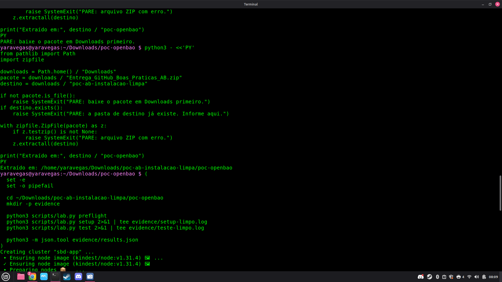
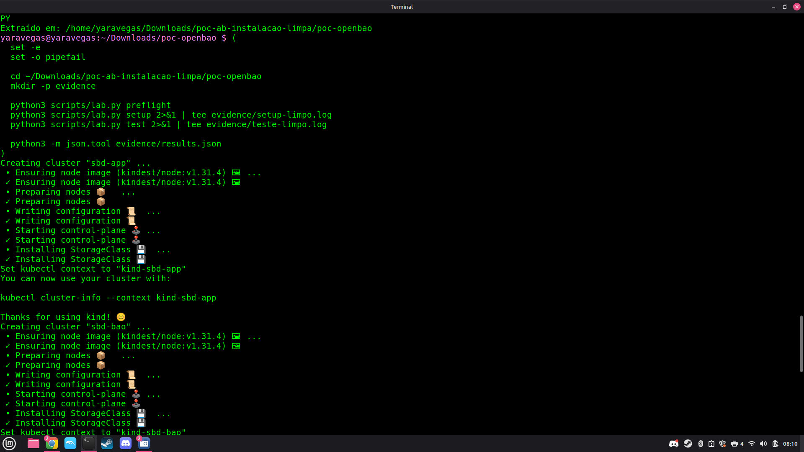
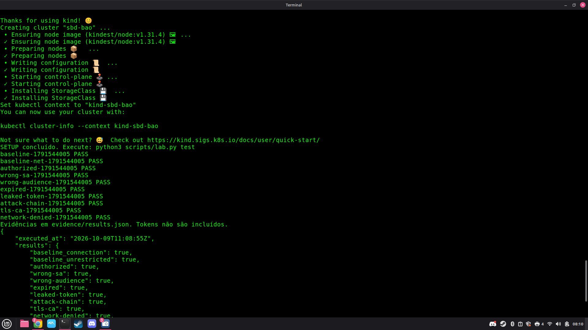
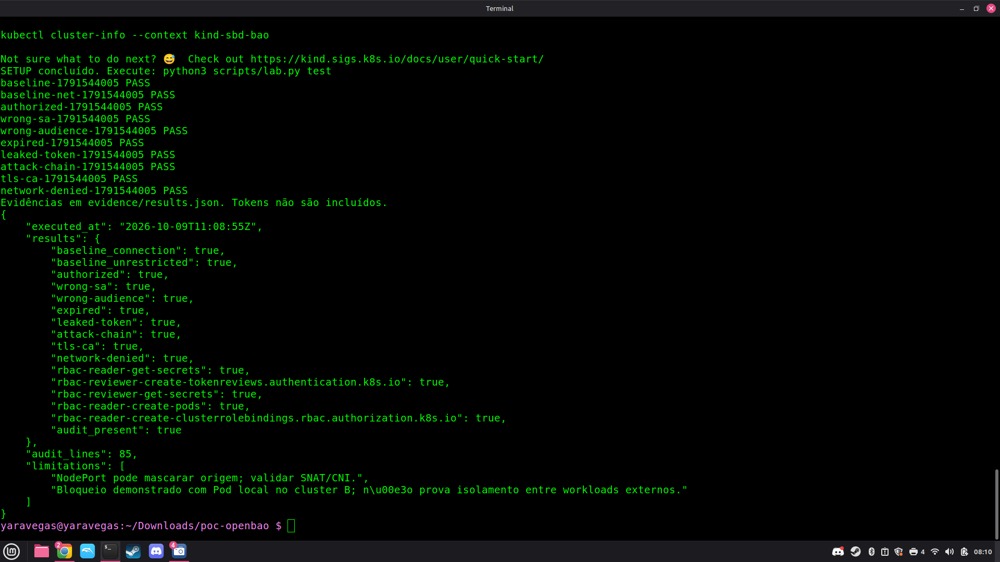

Boas práticas de segurança na comunicação entre clusters Kubernetes
Desenvolvimento: setembro a outubro de 2026. Pesquisa, arquitetura, implementação, revisões e evidências.
Instalação limpa concluída · 16 critérios aprovados · escopo de laboratório
Documentação completa — roteiro de leitura
A documentação pode ser lida neste repositório ou na página estática docs/index.html, preparada para GitHub Pages. A página é gerada a partir dos mesmos arquivos Markdown para evitar versões editoriais divergentes.
| Ordem | Documento | Pergunta respondida |
|---|---|---|
| 1 | Modelo geral | Qual o problema, a teoria e o método? |
| 2 | Referência GovHub/MGI/Ipea | De onde veio o contexto e o que é proposta própria? |
| 3 | Arquitetura | Quais componentes e fluxos foram implementados? |
| 4 | Decisões | Por que cada escolha e quais seus custos? |
| 5 | Checklist | Como avaliar as 28 práticas? |
| 6 | Operação | Como preparar, executar, coletar e encerrar? |
| 7 | Testes e resultados | O que foi testado, aprovado e o que falta? |
| 8 | Revisões | O que deu erro e como foi corrigido? |
| 9 | Evidências da instalação limpa | Quais registros sustentam a conclusão? |
| 10 | Fontes | Quais documentos originais foram consultados? |
Organização dos testes
tests/test_probe.py: 7 testes locais do cliente HTTPS com servidor simulado.tests/test_checklist.py: 4 testes do registro documental e requisitos de evidência.tests/test_leak_demo.py: 2 testes da demonstração de sanitização de logs.scripts/lab.py test: execução real no laboratório, com dez Jobs e seis verificações adicionais, totalizando 16 critérios.evidence/public/2026-10-09-instalacao-limpa/: rodada atual, prints, transcrição identificada e manifesto de integridade.evidence/public/VALIDACAO_AUTORA.md: registro histórico da rodada anterior; não representa o estado atual da instalação limpa.
Os testes locais verificam o cliente e utilitários. Os testes reais verificam os cenários Kubernetes descritos na matriz. Não somar 13 e 16 como se fossem controles equivalentes.
Fotos e rastreabilidade
Os PNGs originais ficam junto da rodada em evidence/public/. A página de leitura enquadra apenas a área relevante de cada figura, com legenda e link para o original integral. O enquadramento é feito na apresentação, sem reconstruir texto ou modificar pixels. As cópias em docs/assets/ tornam o site independente de arquivos fora da pasta publicada.
Para atualizar: editar os Markdown, executar python3 scripts/build_docs.py e revisar a página. Não editar o HTML gerado manualmente.
Modelo geral de boas práticas
Período de desenvolvimento: setembro a outubro de 2026. O trabalho compreende pesquisa, definição do recorte, decisões de arquitetura, implementação e revisão. As datas específicas de execução são registradas nas evidências.
1. Problema e pergunta
Uma aplicação pode alcançar um serviço em outro cluster e ainda assim usar identidade errada, permissões excessivas ou credenciais duradouras. A pergunta desta proposta é: como permitir a comunicação necessária, restringir o alcance de um comprometimento e produzir evidências de que os controles funcionam?
O objeto é a comunicação entre clusters Kubernetes. A POC escolhe um fluxo concreto: uma aplicação em A busca um segredo fictício no OpenBao em B. Não cobre todos os serviços ou protocolos de uma organização.
2. Origem do modelo
Este é um modelo próprio de avaliação, fundamentado na documentação de Kubernetes e OpenBao e contextualizado pelo projeto público GovHub. Não é uma norma oficial, um framework publicado por MGI/Ipea ou cópia do modelo de segurança do OpenBao. A referência GovHub oferece um caso de pipelines e integrações; a distribuição em A/B é uma proposta experimental deste trabalho. As fontes estão em FONTES.
O uso de assistência de IA na elaboração não transfere responsabilidade: a autora e os revisores devem conferir código, fontes, resultados e adequação ao ambiente. O modelo exato de IA não é registrado como evidência técnica do laboratório; não há base para atribuir a ele validação independente.
3. Fundamentos
Confidencialidade: limitar quem lê dados. Integridade: restringir alterações e autenticar endpoints. Disponibilidade: manter o serviço utilizável e prever falhas. TLS protege o transporte, mas um cliente autenticado pode receber um segredo e vazá-lo depois.
Autenticação responde quem apresenta uma identidade. Autorização decide quais ações essa identidade pode realizar. A identidade da ServiceAccount de A é avaliada pela autoridade Kubernetes de A; o token emitido pelo OpenBao recebe uma política de acesso. RBAC Kubernetes e ACL OpenBao são controles diferentes.
Segmentação limita caminhos de rede; não identifica sozinha o usuário da aplicação. A política de rede depende do CNI e do caminho efetivo do pacote. NAT pode mudar o endereço observado. Por isso, aplicar YAML não comprova isolamento.
Privilégio mínimo reduz operações e dados acessíveis. Credenciais temporárias limitam a janela de abuso, mas um token válido roubado continua utilizável até expirar ou ser revogado. Defesa em profundidade combina controles para riscos distintos; quantidade de ferramentas não é medida de segurança.
Segurança não é necessariamente o oposto de eficiência. Alguns controles adicionam latência e esforço operacional; padronização e automação podem reduzir erros e retrabalho. Esta POC não mediu desempenho nem demonstra ganho ou perda quantitativa.
4. Classificação dos ativos
| Classe | Exemplo | Tratamento proposto |
|---|---|---|
| Dado pessoal | Nome, CPF ou identificador associado a pessoa natural | Finalidade, acesso necessário e retenção definida |
| Dado pessoal sensível | Saúde, biometria vinculada à pessoa, opinião política | Controles proporcionais e enquadramento conforme art. 5º, II, da LGPD |
| Credencial | Senha, JWT, token OpenBao, chave privada, kubeconfig com material de autenticação | Acesso mínimo, expiração ou rotação, revogação e exclusão de repositórios/logs |
| Informação técnica confidencial | Endereços internos, configurações e metadados de auditoria | Publicação revisada e acesso conforme necessidade |
| Dado sintético | Mensagens fictícias da POC | Uso exclusivo nos testes e identificação explícita |
Uma senha não é automaticamente dado pessoal sensível na classificação legal. Pode ser informação de segurança crítica e também estar associada a uma pessoa. Um CPF é dado pessoal, mas não integra automaticamente a categoria legal de dados sensíveis. As categorias técnicas e legais não são equivalentes [R16].
5. Método de aplicação
- Inventariar origem, destino, porta, protocolo, finalidade, identidade, ativo e responsável.
- Identificar ameaças e impacto: interceptação, identidade indevida, permissões excessivas, token vazado e interrupção.
- Escolher controles proporcionais, registrando alternativa, benefício, custo e risco residual.
- Implementar em laboratório isolado com dados fictícios.
- Executar teste positivo e negativo, preservar evidências e avaliar falsos positivos.
- Revisar resultados com pessoa responsável, registrar pendências e repetir após mudanças.
A unidade de avaliação é a prática com evidência, não a ferramenta instalada. Usar o checklist de 28 práticas e o registro de decisões. Cada item exige responsável, data, evidência e justificativa. O formulário pode ser criado por python3 scripts/checklist.py init e analisado por python3 scripts/checklist.py report. Ele verifica preenchimento, não descobre controles nem certifica segurança.
6. Governança e administração
A proposta da autora é um único titular humano de administração geral ativa, com conta individual, evitando contas compartilhadas e distribuição rotineira de privilégios globais. Demais pessoas e workloads recebem apenas o necessário. Essa é uma decisão de governança deste trabalho, não exigência das fontes.
A concentração reduz a quantidade de acessos globais, mas cria dependência e risco de indisponibilidade. A adoção deve prever substituição formal, acesso emergencial rastreável e revisão independente; não depender de senha compartilhada. MFA, revisão periódica de acessos e processo de desligamento são requisitos a avaliar no ambiente real. Nenhum deles foi comprovado pela suíte desta POC.
O root token mantido no estado local é uma simplificação do bootstrap e dos testes. Não é identidade de aplicação nem demonstra gestão de administradores em produção. Não publicá-lo. Separar responsabilidades de operação, aprovação e revisão das evidências.
7. Atualizações e ciclo de vida
Antes de atualizar: inventariar versões e imagens, ler release notes, verificar compatibilidade entre cliente/API/CNI, avaliar mudanças de configuração e preparar recuperação. Aplicar em ambiente de teste, repetir testes positivos e negativos e comparar resultados. Registrar versão anterior, nova versão, motivo, responsável e evidência. Tags facilitam o laboratório, mas digests e integridade dos manifests devem ser controlados em uma adoção real.
A remoção do backend file e a mudança para auditoria declarativa no OpenBao 2.7 ilustram por que copiar configuração antiga é insuficiente. Atualização de software não equivale a atualização validada do sistema. Certificados, JWTs e tokens também expiram; sua renovação é parte da operação.
8. Resposta a vazamento
Conter o acesso afetado, revogar a credencial comprometida, identificar escopo e período, analisar registros preservados, corrigir a origem e emitir nova credencial quando necessário. Rotacionar também o segredo de destino se seu valor foi exposto: revogar o token do OpenBao não apaga um segredo já lido nem invalida automaticamente a senha de outro sistema.
Repetir os testes após a correção e documentar o risco residual. Não publicar material comprometido como evidência. Na POC todos os valores são fictícios e o cenário de vazamento é controlado.
9. Critério de aceite e limites
A demonstração técnica exige comunicação autorizada funcionando, recusas esperadas, evidências datadas e interpretação correta. O modelo completo exige avaliação das 28 práticas, pendências e responsáveis. Uma adoção produtiva demanda ainda persistência, recuperação, disponibilidade, operação de certificados, resposta a incidentes e testes no caminho real da rede.
O aceite documental não transforma resultados limitados em garantia geral. Serviço indisponível também pode causar timeout: combinar teste autorizado funcional, baseline e teste negativo reduz essa ambiguidade, mas ainda é necessário verificar onde o bloqueio ocorreu.
Referência real e aplicação na POC
Repositório: https://github.com/GovHub-br/data-application-mgi Commit: 9f9d94761a8867bcdd392a4b10c70b56f2e8c8da Consulta: 08/10/2026. Leitura da árvore por checkout Git somente para inspeção.
| Evidência observada | Caminho | Uso na POC | Limite da conclusão |
|---|---|---|---|
| Airflow e dbt executam pipelines e transformações | README.md | Workload consumidor representa pipeline lendo configuração | Não executa as DAGs reais |
| Compose é infraestrutura local | infra/README.md | Cenário isolado, descartável | Não descreve segurança de produção |
| PostgreSQL, Superset e MinIO presentes | infra/docker-compose.yml | Motiva credenciais separadas por sistema | Não prova integração OpenBao existente |
| Portas de serviços publicadas no Compose | infra/docker-compose.yml | Motiva inventário e restrição de fluxos | Firewall real não foi inspecionado |
| Valores padrão de desenvolvimento | infra/docker-compose.yml | Motiva retirar credenciais reais do código e limitar acesso | Não afirmar que produção usa esses valores |
| MCP com parâmetro de leitura configurável | infra/docker-compose.yml | Motiva revisão de privilégios e ações permitidas | Não conecta IA/MCP ao laboratório |
| AGENTS.md ausente nesse commit | Árvore completa do checkout | Fornecido AGENTS.md próprio da POC | Não reconstruir regras anteriores sem fonte |
Separar o que foi observado do que foi proposto: a referência consultada não mostra uma topologia Kubernetes/OpenBao nesses arquivos. A arquitetura da POC é uma hipótese de laboratório para estudar comunicação segura, não uma descrição da infraestrutura deles. Não foram usados dados pessoais, credenciais reais ou serviços conectados à produção.
Para integração posterior: confirmar namespaces, CNI, endpoint, autoridade CA, modelo de identidade e fluxos efetivos com responsáveis pelo ambiente; mapear políticas por pipeline; executar testes de compatibilidade do provider de secrets do Airflow; registrar versões e evidências antes de propor aplicação institucional.
Contexto institucional e comparação
A página oficial Quem somos descreve o GovHub como iniciativa de integração e qualificação de dados governamentais, originada da parceria Ipea/Lab Livre-UnB em 2024. O repositório público consultado contém pipelines vinculados ao contexto MGI. Essa associação não demonstra que o MGI opera Kubernetes/OpenBao na topologia proposta.
| Dimensão | Referência pública consultada | Proposta deste trabalho |
|---|---|---|
| Objetivo | Integrar e transformar dados governamentais | Avaliar controles da comunicação entre clusters |
| Aplicação | Airflow/dbt e integrações de dados | Job sintético representando consumidor |
| Infraestrutura inspecionada | Arquivos de desenvolvimento local e código público | Dois clusters kind no mesmo host |
| Segredos | Necessidade de credenciais nas integrações | OpenBao com identidade e escopo por consumidor |
| Evidência | Código/documentação públicos | Testes controlados e resultados informados |
| Adoção institucional | Não verificada por acesso ao ambiente real | Não implantada ou homologada institucionalmente |
A mudança proposta é tornar explícitas as fronteiras, permissões e verificações de um fluxo. Não é possível afirmar melhoria percentual de segurança, superioridade sobre a produção atual ou substituição recomendada da arquitetura institucional sem avaliação do ambiente real.
O modelo foi elaborado para este trabalho; a inspiração funcional vem do cenário de integração GovHub e os mecanismos vêm das documentações originais. Não houve cópia de um AGENTS.md institucional. O repositório de referência não é incluído no pacote.
Exemplo público de uso da tecnologia
A documentação administrativa do GitLab Secrets Manager descreve uso de OpenBao. É exemplo de adoção da tecnologia, não prova de que esta POC reproduz o desenho ou atende aos requisitos do GitLab. A existência de outros usuários não substitui nossos testes.
Consulta das páginas de contexto: 09/10/2026. Consulta do checkout de referência: 08/10/2026; commit fixado acima.
Arquitetura implementada na POC A–B
Componentes e fronteiras
Dois clusters kind independentes compartilham o host Docker do laboratório. A separação representa autoridades Kubernetes distintas; não oferece isolamento físico contra comprometimento do host.
Job reader → HTTPS / NodePort 30200 → OpenBao em B
Cluster B · sbd-baoOpenBao → HTTPS 6443 / TokenReview → API Kubernetes de A
PebbleDB e auditoria em volume efêmero de B. Administração via port-forward local.
Diagrama Mermaid para GitHub
flowchart TD
subgraph A["Cluster A · sbd-app"]
P["Job consumidor · reader"]
K["API Kubernetes A · TokenReview"]
end
subgraph B["Cluster B · sbd-bao"]
S["NodePort 30200"]
O["OpenBao · TLS 8200"]
D["PebbleDB e auditoria · emptyDir"]
end
P -->|"HTTPS e JWT"| S
S --> O
O -->|"HTTPS 6443 · reviewer"| K
O --> DO fluxo de negócio parte de A para B. B consulta a API de A para validar a identidade; portanto há comunicação de retorno B→A com finalidade e porta específicas. Não há malha geral de comunicação Pod a Pod, mTLS, service mesh ou federação de identidades.
| Componente | Implementação | Motivo e limite |
|---|---|---|
| Ambiente | kind, um nó por cluster, Docker | Reprodução local; sem HA nem isolamento de host |
| Rede | Calico 3.29.3 e NetworkPolicy | Aplicação de regras; NAT e tráfego de nó exigem validação |
| Consumidor | Job Python no namespace poc de A | Simula aplicação; não executa DAG real do GovHub |
| Identidade | ServiceAccount reader com JWT projetado | Audience openbao, duração solicitada de 600 s |
| Validação | ServiceAccount reviewer em A | Somente criar TokenReviews; token solicitado de 1 h |
| Segredos | OpenBao 2.7.1 em B | KV v2 e ACL de leitura por caminho |
| Transporte | CA local e certificado de servidor de 7 dias | Verifica CA e nome/IP; cliente sem certificado mTLS |
| Estado | PebbleDB e audit.json em emptyDir | Sobrevive a reinício de contêiner no mesmo Pod; perdido ao excluir/substituir o Pod |
| Administração | kubectl e port-forward 127.0.0.1:18200 | Bootstrap local com root; material fica em .state |
Fluxos permitidos e finalidade
| ID | Origem → destino | Porta/protocolo | Finalidade |
|---|---|---|---|
| F01 | Job A → IP do nó B → OpenBao | TCP 30200 → 8200, HTTPS | Login e leitura de segredo fictício |
| F02 | OpenBao B → API do nó A | TCP 6443, HTTPS | TokenReview com autoridade de A |
| F03 | Operador → port-forward local → serviço B | TCP 18200 → 8200, HTTPS | Inicialização e configuração administrativa |
| F04 | Probe local B → serviço B | TCP 8200, HTTPS | Controle experimental de bloqueio local |
Os CIDRs de Pods são 192.168.0.0/17 em A e 192.168.128.0/17 em B. IPs dos nós são descobertos via Docker e não devem ser fixados a partir de um print. Os CIDRs distintos evitam sobreposição neste laboratório, mas não criam roteamento entre Pods dos clusters.
Autenticação e autorização
- O Job lê JWT projetado e valida certificado do OpenBao.
- Envia JWT ao mount
auth/cluster-a, rolereader. - OpenBao consulta a API Kubernetes de A usando o reviewer.
- A role vincula namespace
poc, ServiceAccountreadere audienceopenbao. - OpenBao emite token com TTL e máximo configurados de 300 s; role experimental de expiração usa 30 s.
- ACL permite ler
secret/data/app/config. O caminhosecret/data/other/confige ações administrativas devem ser recusados.
reader não recebe permissão de ler Kubernetes Secrets ou criar Pods. O reviewer recebe apenas a permissão de validação requerida. As credenciais e os tokens de cada camada não são intercambiáveis.
NetworkPolicies efetivas
Em A, probe-egress seleciona Pods app=probe e restringe saída aos destinos e portas configurados para B. Em B, bao-ingress seleciona OpenBao, limita saída à API de A e permite entrada dos IPs dos nós A/B e de probes locais com rótulo autorizado. As regras são específicas aos Pods selecionados; não implementam um default-deny universal em todos os namespaces.
A permissão dos IPs dos nós acomoda o caminho NodePort do laboratório. Ela não distingue todas as identidades de workloads que podem aparecer após SNAT. O caso network-denied é local a B. O teste não prova uma fronteira de rede impermeável entre clusters.
Endurecimento e estado
Namespace usa Pod Security restricted v1.31. Contêineres usam usuário não root, sem escalada de privilégios, capacidades removidas, raiz somente leitura, seccomp RuntimeDefault e limites de recursos. Os volumes necessários continuam graváveis. Esses controles reduzem superfície; não demonstram resistência a escape de contêiner.
OpenBao usa TLS, modo servidor normal e auditoria declarativa. Há apenas uma réplica; unseal 1/1 e root em arquivo local são concessões de laboratório. Não há backup/restore, armazenamento persistente, auto-unseal, rotação automática de CA ou coletor de auditoria externo.
Versões e reprodutibilidade
O script fixa kindest/node:v1.31.4, Calico 3.29.3 e OpenBao 2.7.1; o probe usa python:3.12-alpine, uma tag mutável. A autora informou kubectl 1.36.0, Docker 29.1.3, Python 3.12.3, OpenSSL 3.0.13 e kind 0.32.0-alpha. A execução observada não comprova compatibilidade suportada desse conjunto; kubectl 1.36 e API 1.31 estão fora da diferença de uma versão minor suportada para esse cliente, conforme a política oficial. Corrigir esse desvio antes de nova reprodução. Preferir cliente dentro da política de version skew e uma combinação suportada em adoção real.
Digest OpenBao observado no diagnóstico da autora: sha256:6d2b93856e3fcf7b18ad855a0b51eaba474dc8b79cf554379ea32034797d2acf. O script permite POC_BAO_IMAGE; alterar a imagem exige repetir a validação. O digest observado não é uma análise de vulnerabilidades.
Registro de decisões e efeitos
Versão 4.0. Justificativas explícitas da POC; efeitos positivos são esperados, não ganhos já medidos.
D01 - Dois clusters independentes
Por que foi escolhida: Tornar explícita a fronteira entre consumidor e autoridade de segredos e manter o recorte entre clusters.
Efeito positivo esperado: Permite examinar endpoints e identidades de autoridades distintas.
Efeito negativo ou risco residual: Mais consumo e complexidade de rota; não produz conectividade geral entre Pods.
Alternativa considerada: Um cluster com namespaces seria mais simples, mas não representaria a fronteira pretendida.
Como verificar: Conferir APIs distintas e os fluxos F01/F02.
Condição de revisão: Reavaliar topologia se o ambiente real tiver outra separação de autoridades.
Fontes de apoio: [R01], [R03]. A seleção concreta é uma decisão desta POC.
D02 - Kind para reprodução local
Por que foi escolhida: Facilitar um laboratório descartável que a autora possa testar em Linux.
Efeito positivo esperado: Criação e limpeza delimitadas; não exige contratar infraestrutura.
Efeito negativo ou risco residual: Rede Docker e kubeconfig local diferem da operação institucional.
Alternativa considerada: Clusters gerenciados ou VMs seriam mais representativos, com mais requisitos de acesso e recursos.
Como verificar: Criar os clusters, confirmar versões e contextos; rejeitar nomes preexistentes.
Condição de revisão: Se o objetivo passar a disponibilidade ou desempenho institucional, substituir o cenário local.
Fontes de apoio: [R08]. A seleção concreta é uma decisão desta POC.
D03 - Calico como CNI do ensaio
Por que foi escolhida: A política de rede precisa de um mecanismo que a aplique, não apenas de YAML aceito pela API.
Efeito positivo esperado: Oferece um caminho de enforcement para os testes propostos.
Efeito negativo ou risco residual: Adiciona componentes, permissões e manutenção; NAT pode afetar a interpretação.
Alternativa considerada: Usar a CNI já aprovada no ambiente real pode evitar um componente novo; comprovar seu suporte.
Como verificar: Testar acesso permitido/bloqueado e investigar origem efetiva.
Condição de revisão: Não instalar Calico sobre CNI institucional somente por ser a escolha do laboratório.
Fontes de apoio: [R07], [R08]. A seleção concreta é uma decisão desta POC.
D04 - OpenBao para o fluxo de segredos
Por que foi escolhida: Demonstrar autenticação e autorização de consumidor que acessa configuração mantida em outro cluster.
Efeito positivo esperado: Centraliza o ponto de política e permite testar validade e revogação.
Efeito negativo ou risco residual: Torna-se dependência operacional; falha do servidor ou cliente autorizado comprometido ainda importa.
Alternativa considerada: Secrets nativos ou gerenciador já adotado podem bastar em outros contextos; comparar requisitos antes de acrescentar serviço.
Como verificar: Login, leitura restrita, negação administrativa e resposta à revogação.
Condição de revisão: Remover ou substituir se não houver requisito que justifique operação e manutenção adicionais.
Fontes de apoio: [R02], [R06], [R10]. A seleção concreta é uma decisão desta POC.
D05 - TLS de servidor e identidade por token
Por que foi escolhida: Proteger o transporte e verificar o destino, mantendo separado o teste da identidade da aplicação.
Efeito positivo esperado: Cliente rejeita CA não confiável e usa identidade específica.
Efeito negativo ou risco residual: Certificados expiram; mTLS de cliente não está demonstrado nesta versão.
Alternativa considerada: mTLS pode ser necessário em outro modelo de confiança, com mais gestão de certificados.
Como verificar: CA inválida rejeitada; SAN e destino compatíveis; login correto.
Condição de revisão: Reavaliar se o serviço exigir certificado cliente ou política de confiança diferente.
Fontes de apoio: [R04]. A seleção concreta é uma decisão desta POC.
D06 - Kubernetes Auth e reviewer dedicado
Por que foi escolhida: Avaliar o vínculo entre identidade do cluster A e autorização no OpenBao B.
Efeito positivo esperado: Validação usa a API da autoridade prevista com permissões delimitadas.
Efeito negativo ou risco residual: Disponibilidade e renovação do reviewer influenciam o login.
Alternativa considerada: JWT/OIDC é alternativa documentada, cuja validade e revogação precisam de análise própria.
Como verificar: ServiceAccount/audience errados negados; reviewer cria somente TokenReview.
Condição de revisão: Reconsiderar se o endpoint da API não puder ser alcançado com segurança.
Fontes de apoio: [R03], [R05]. A seleção concreta é uma decisão desta POC.
D07 - TTL de laboratório e política de leitura estreita
Por que foi escolhida: Limitar alcance e tornar revogação/expiração observáveis em um ensaio curto.
Efeito positivo esperado: A credencial não autoriza outros caminhos nem escrita.
Efeito negativo ou risco residual: Token válido copiado ainda permite seu próprio acesso; renovação frequente tem custo.
Alternativa considerada: Prazo maior reduz autenticações, mas aumenta janela de uso; definir conforme risco e operação reais.
Como verificar: TTL 300 s no ensaio normal e 30 s na role de expiração; testar ambas.
Condição de revisão: Esses valores são parâmetros da POC, não recomendação universal das fontes.
Fontes de apoio: [R02], [R03]. A seleção concreta é uma decisão desta POC.
D08 - Um titular humano de administração geral
Por que foi escolhida: Atender à regra de governança proposta pela autora e reduzir dispersão do poder global.
Efeito positivo esperado: Facilita inventário de concessões e responsabilização.
Efeito negativo ou risco residual: Cria concentração de poder e risco de indisponibilidade; compromisso dessa identidade tem grande impacto.
Alternativa considerada: Outra organização pode precisar de modelo de concessão temporária e custódia diferente; não transplantar a regra sem revisão.
Como verificar: Inventariar concessões equivalentes, substituição e uso cotidiano de contas limitadas.
Condição de revisão: A documentação Kubernetes sustenta privilégio mínimo, não exige exatamente um administrador. Unseal/custódia de chaves é decisão distinta.
Fontes de apoio: [R05], [R02]. A seleção concreta é uma decisão desta POC.
D09 - Armazenamento temporário e bootstrap simplificado
Por que foi escolhida: Reduzir montagem do laboratório para observar o fluxo sem construir uma plataforma de produção.
Efeito positivo esperado: Instalação pequena, baixo esforço inicial e descarte fácil.
Efeito negativo ou risco residual: Recriar o Pod perde armazenamento; chave única de unseal e root retido são simplificações com risco.
Alternativa considerada: Persistência, backup e custódia de chaves são necessários quando a criticidade exigir.
Como verificar: Registrar limites e não declarar BP17 atendido por essa escolha.
Condição de revisão: Nunca usar essa decisão como desenho de produção ou prova de recuperação.
Fontes de apoio: [R02], [R09]. A seleção concreta é uma decisão desta POC.
D10 - Probes diretos, sem Agent/CSI nesta versão
Por que foi escolhida: Manter transparente o ensaio de API, token e autorização antes de adicionar mecanismo de entrega.
Efeito positivo esperado: Menos componentes para diagnosticar o comportamento básico.
Efeito negativo ou risco residual: Não cobre renovação automática, lifecycle nem integração real do pipeline.
Alternativa considerada: Agent/CSI ou backend de secrets do consumidor podem resolver requisitos reais, após justificar privilégios e dependências.
Como verificar: Testar o cliente e revisar ausência de valores privados nos logs.
Condição de revisão: Reavaliar quando a aplicação tiver requisito de entrega/renovação contínua.
Fontes de apoio: [R03], [R02]. A seleção concreta é uma decisão desta POC.
D11 - Log por campos operacionais controlados
Por que foi escolhida: Demonstrar uma exposição simples por excesso de conteúdo e uma saída reduzida.
Efeito positivo esperado: Evita os marcadores restritos no caso testado.
Efeito negativo ou risco residual: Pode retirar informação útil e não detecta todos os vazamentos ou campos novos.
Alternativa considerada: Redação automática pode complementar, mas exige tratamento de falhas e teste de conteúdo.
Como verificar: Executar leak_demo e revisar o que se perde ou permanece no log.
Condição de revisão: Testar novos eventos antes de liberar campos; não confundir o exemplo com scanner universal.
Fontes de apoio: [R06]. A seleção concreta é uma decisão desta POC.
D12 - Suíte automatizada com revisão humana
Por que foi escolhida: Repetir verificações observáveis sem terceirizar a conclusão de segurança.
Efeito positivo esperado: Consistência e rastreabilidade do procedimento.
Efeito negativo ou risco residual: PASS pode refletir um teste errado ou causa equivocada; simulação não valida cluster real.
Alternativa considerada: Revisão manual sem automação reduz infraestrutura de teste, mas dificulta repetição; combinar conforme escopo.
Como verificar: Revisar premissa, negativo, resultado e causa antes de marcar Conforme.
Condição de revisão: Mudar a suíte quando o risco mudar; não aprovar somente porque ferramenta ou IA afirmou.
Fontes de apoio: [R15], [R07]. A seleção concreta é uma decisão desta POC.
D13 - Não adicionar scanners, service mesh e plataformas sem requisito
Por que foi escolhida: Evitar aumentar a superfície e o custo sem identificar qual lacuna o componente trata.
Efeito positivo esperado: Menos interfaces, integrações, permissões e dependências para manter.
Efeito negativo ou risco residual: Adiar uma ferramenta necessária também mantém gaps; simplificar não é omitir controle obrigatório.
Alternativa considerada: Adicionar componente somente com risco, responsável, teste e comparação com capacidade existente.
Como verificar: Revisar BP26 e decisão da inclusão/adiamento com evidência.
Condição de revisão: Se surgir gap demonstrado, reconsiderar; menos componentes não significa menos proteção necessária.
Fontes de apoio: [R10]. A seleção concreta é uma decisão desta POC.
D14 - Atualização controlada, sem troca cega de versões
Por que foi escolhida: Conservar compatibilidade e proteção durante a evolução do modelo.
Efeito positivo esperado: Mudança fica associada a motivo, testes e retorno.
Efeito negativo ou risco residual: Exige tempo e pode manter risco enquanto correção não é aplicada.
Alternativa considerada: Atualização automática exige pipeline capaz de detectar regressões e recuperar falhas.
Como verificar: Aplicar BP25 e repetir verificações afetadas.
Condição de revisão: Priorização conforme exposição; os números fixados no script precisam de revisão.
Fontes de apoio: [R09], [R12]. A seleção concreta é uma decisão desta POC.
Nota da entrega A–B de 09/10/2026
Este catálogo registra critérios e decisões do modelo. Situações iniciais não são uma avaliação atual preenchida. Os resultados efetivamente informados estão em Testes e resultados. Aprovação da suíte não torna automaticamente conformes as 28 práticas.
Checklist verificável do modelo de boas práticas
Versão 4.0 | 08/10/2026. São 28 práticas. Cada situação inicial é Pendente. P0 indica pré-condição crítica; P1 indica análise contextual complementar. Fontes sustentam mecanismos, não todas as escolhas. Prioridade não é pontuação de segurança.
BP01 - Inventariar os fluxos entre clusters (P0)
Risco: Comunicação necessária não identificada ou exposição de interfaces sem finalidade.
Prática recomendada: Registrar origem, destino, porta, protocolo, aplicação, identidade, ativo e justificativa de cada fluxo.
Como verificar: Comparar inventário com manifests, Services, endpoints e tráfego observado no ambiente.
Evidência exigida: Inventário datado, desenho dos fluxos e configuração correspondente, sem credenciais.
Critério de atendimento: Cada fluxo permitido possui finalidade e responsável; fluxos desconhecidos permanecem pendentes até investigação.
Impacto possível: Esforço inicial de levantamento e manutenção quando a arquitetura muda.
Situação na demonstração: Documentado para o laboratório; confirmação por observação de tráfego ainda pendente.
Decisões associadas: D01. Fontes de apoio: [R01].
BP02 - Delimitar fronteiras e autoridades de identidade (P0)
Risco: Confundir clusters diferentes ou atribuir a mesma autoridade a contas homônimas.
Prática recomendada: Identificar API, CA, namespaces, contas e mount de autenticação por cluster consumidor.
Como verificar: Conferir o endpoint configurado e autenticar uma identidade de cada autoridade efetivamente utilizada.
Evidência exigida: Mapa de confiança e configuração de mounts, endpoints e CAs.
Critério de atendimento: Toda identidade é vinculada à autoridade prevista; novo consumidor não é incluído sem configuração e teste específicos.
Impacto possível: Configuração adicional por cluster e maior responsabilidade sobre rotação de confiança.
Situação na demonstração: Dois clusters criados na instalação limpa de 09/10/2026; A é consumidor com mount próprio. Sem terceiro cluster.
Decisões associadas: D01, D06. Fontes de apoio: [R03].
BP03 - Verificar TLS em todos os fluxos sensíveis (P0)
Risco: Intercepção de JWT, segredo ou credencial e conexão com servidor indevido.
Prática recomendada: Usar HTTPS com CA confiável e hostname/IP compatível com SAN, sem desabilitar validação; aplicar TLS também ao TokenReview.
Como verificar: Teste positivo com certificado válido e negativo com CA não confiável; revisar destino, SAN e validade.
Evidência exigida: Resultados de handshake e rejeição específica de certificado, sem chave privada.
Critério de atendimento: Fluxo válido funciona e certificado não confiável é rejeitado por causa TLS identificada; conexão em claro não é aceita como alternativa.
Impacto possível: Handshake, gestão de certificados e custo de renovação; medir impacto em vez de presumir.
Situação na demonstração: Comunicação autorizada e rejeição de CA não confiável aprovadas na rodada real de 09/10/2026. Inspeção independente de todos os fluxos TLS permanece pendente.
Decisões associadas: D05. Fontes de apoio: [R04].
BP04 - Controlar o ciclo de vida de certificados (P0)
Risco: Expiração interrompe o serviço ou confiança antiga permanece ativa.
Prática recomendada: Definir emissor, validade, proprietário, renovação, distribuição de CA e procedimento de substituição.
Como verificar: Simular renovação e verificar acesso após troca; examinar alerta de vencimento.
Evidência exigida: Procedimento e registro de teste de renovação, com datas e responsáveis.
Critério de atendimento: Renovação e recuperação de falha documentadas e verificadas dentro do prazo operacional definido.
Impacto possível: Manutenção recorrente e possível janela de atualização.
Situação na demonstração: Certificados de laboratório de sete dias; renovação automática não implementada.
Decisões associadas: D05, D14. Fontes de apoio: [R04], [R12].
BP05 - Usar identidade específica por consumidor (P0)
Risco: Credenciais compartilhadas ampliam alcance e dificultam rastreamento.
Prática recomendada: Separar ServiceAccounts por aplicação e autorizar nome e namespace específicos no OpenBao.
Como verificar: Executar login da conta permitida e da conta outsider.
Evidência exigida: Configuração da role e logs de login permitido/rejeitado.
Critério de atendimento: Conta legítima aceita; conta fora do vínculo rejeitada; exceções têm justificativa e prazo.
Impacto possível: Mais contas e políticas para manter; melhora atribuição de acesso.
Situação na demonstração: wrong-sa aprovado na rodada real de 09/10/2026; a identidade outsider foi recusada conforme o teste.
Decisões associadas: D06, D07. Fontes de apoio: [R03], [R05].
BP06 - Restringir audience e prazo do JWT (P0)
Risco: Token emitido para outra finalidade é reaproveitado indevidamente.
Prática recomendada: Projetar token com audience específica e expiração; desligar montagem automática onde não necessária.
Como verificar: Tentar login com audience válida e incorreta; revisar volume projetado e validade emitida.
Evidência exigida: Manifest do consumidor e resultados dos testes, sem JWT.
Critério de atendimento: Audience indevida é rejeitada e tokens não são mantidos como Secrets permanentes por conveniência.
Impacto possível: Renovação e compatibilidade das aplicações precisam ser verificadas.
Situação na demonstração: wrong-audience aprovado na rodada real de 09/10/2026; JWT projetado solicita 600 s. Expiração do JWT Kubernetes não foi testada separadamente da expiração do token OpenBao.
Decisões associadas: D06. Fontes de apoio: [R03].
BP07 - Limitar o reviewer de autenticação (P0)
Risco: Validador ganha poder além do necessário ou sua expiração interrompe autenticação.
Prática recomendada: Conta reviewer dedicada com create em tokenreviews; CA e API corretas; estratégia explícita de renovação.
Como verificar: Verificar can-i para TokenReview e Secrets; testar login após renovação e após falha controlada.
Evidência exigida: Regras RBAC, can-i e procedimento de rotação do reviewer.
Critério de atendimento: Reviewer pode validar tokens e não ler Secrets; ciclo de renovação é conhecido e testado.
Impacto possível: Complexidade operacional e dependência da API remota.
Situação na demonstração: Verificações RBAC do reviewer aprovadas na rodada real de 09/10/2026; renovação feita ao executar test. Automação contínua não implementada.
Decisões associadas: D06. Fontes de apoio: [R03], [R05].
BP08 - Aplicar autorização mínima por caminho (P0)
Risco: Aplicação lê segredos de outras aplicações ou altera configurações.
Prática recomendada: Política por recurso e ação: permitir apenas caminhos e capacidades necessários.
Como verificar: Ler caminho próprio, ler caminho de outro consumidor e tentar escrita.
Evidência exigida: Policy e logs allowed_read, foreign_path_denied e write_denied.
Critério de atendimento: Acesso necessário funciona; leitura estrangeira e escrita desnecessária são negadas.
Impacto possível: Políticas mais detalhadas e revisão quando a aplicação muda.
Situação na demonstração: authorized, leaked-token e attack-chain aprovados na rodada real de 09/10/2026; leitura do próprio escopo permitida e expansão de permissões recusada nos casos testados.
Decisões associadas: D07. Fontes de apoio: [R02].
BP09 - Restringir fluxos de entrada e saída (P0)
Risco: Pod comprometido usa caminhos de rede que não são necessários.
Prática recomendada: Aplicar políticas explícitas de origem, destino e porta e comprovar suporte de enforcement da CNI.
Como verificar: Comparar baseline e pós-controle com serviço saudável; tentar acesso de origem não permitida.
Evidência exigida: Políticas aplicadas, sucesso legítimo, bloqueio e, quando disponível, registros do CNI.
Critério de atendimento: Fluxos necessários continuam operacionais e tentativas fora do escopo são bloqueadas com causa identificável.
Impacto possível: Regras podem quebrar dependências legítimas; exige levantamento e diagnóstico.
Situação na demonstração: network-denied aprovado em 08/10 e na instalação limpa de 09/10/2026; bloqueio demonstrado localmente em B, sem comprovação de isolamento de workloads externos.
Decisões associadas: D03. Fontes de apoio: [R07], [R08].
BP10 - Validar o efeito de NAT e da exposição externa (P0)
Risco: Regras baseadas em IP passam a representar o nó ou gateway, não a aplicação.
Prática recomendada: Mapear NodePort, LoadBalancer, NAT e firewall; definir onde cada controle enxerga a origem efetiva.
Como verificar: Examinar IP/porta antes e depois da tradução e testar dois consumidores remotos com permissões distintas.
Evidência exigida: Diagrama de encaminhamento, registros de origem e testes entre consumidores.
Critério de atendimento: Não se atribui isolamento por identidade remota a uma regra que apenas permite o IP compartilhado de nó/gateway.
Impacto possível: Pode exigir firewall, gateway ou mudança de topologia; custo depende do ambiente.
Situação na demonstração: Limite documentado; isolamento por identidade remota não demonstrado nesta versão.
Decisões associadas: D01, D03. Fontes de apoio: [R07].
BP11 - Controlar duração, revogação e renovação do token OpenBao (P0)
Risco: Token continua utilizável além da necessidade ou aplicação perde acesso por renovação mal definida.
Prática recomendada: Definir TTL e máximo, testar expiração e revogação e documentar política de renovação do consumidor.
Como verificar: Ler com token válido, revogar e repetir; emitir token curto, aguardar expiração e repetir.
Evidência exigida: Resultados de revogação e expiração, sem valor de token.
Critério de atendimento: Token inválido é negado; estratégia de continuidade para aplicação real é definida antes da adoção.
Impacto possível: Autenticações adicionais e necessidade de tratar falhas sem laço infinito.
Situação na demonstração: Revogação e expiração do token OpenBao aprovadas na rodada real de 09/10/2026; TTL normal de 300 s e role experimental de 30 s. Renovação contínua não implementada.
Decisões associadas: D07. Fontes de apoio: [R02], [R03].
BP12 - Manter credenciais administrativas fora dos workloads (P0)
Risco: Root token, unseal key ou chave privada vazam para aplicação, Git ou relatório.
Prática recomendada: Separar bootstrap de operação; aplicar acesso mínimo; não entregar root ao consumidor e não registrar segredos em logs.
Como verificar: Revisar manifests, arquivos e evidências; verificar quem acessa bootstrap e seu descarte.
Evidência exigida: Registro da revisão, permissões e processo de descarte, sem conteúdo sensível.
Critério de atendimento: Aplicação recebe somente sua identidade e token; material administrativo tem proprietário, finalidade e retenção definidos.
Impacto possível: Mais disciplina de operação e controle de acesso.
Situação na demonstração: .state é local, restrito e excluído do pacote; root retido apenas para laboratório, não adequado à operação real.
Decisões associadas: D08, D09. Fontes de apoio: [R02], [R06].
BP13 - Delimitar a entrega de segredos à aplicação (P1)
Risco: Segredo é persistido, exposto ou copiado sem necessidade após leitura.
Prática recomendada: Escolher mecanismo de entrega compatível com o consumidor e controlar arquivo, memória, permissões e retenção.
Como verificar: Inspecionar consumo, saídas e armazenamento; verificar ausência de valor sensível em logs e artefatos.
Evidência exigida: Descrição do mecanismo e resultado de revisão de saídas.
Critério de atendimento: Mecanismo tem justificativa e destino controlado; valores não aparecem nas evidências publicadas.
Impacto possível: Agent/CSI ou backend específico podem introduzir componentes e manutenção adicionais.
Situação na demonstração: Cliente Python lê dado fictício sem imprimi-lo; Agent/CSI e Airflow não integrados.
Decisões associadas: D10. Fontes de apoio: [R02], [R06].
BP14 - Registrar e revisar auditoria (P1)
Risco: Acesso indevido não deixa evidência útil ou logs acabam expondo metadados sensíveis.
Prática recomendada: Habilitar auditoria, restringir acesso, definir retenção e correlação de solicitações com teste/identidade.
Como verificar: Gerar leitura permitida e negação; conferir que ambas podem ser correlacionadas nos registros.
Evidência exigida: Registro resumido com resultado da correlação e política de retenção.
Critério de atendimento: Eventos relevantes são rastreáveis sem publicação de tokens ou segredos; contagem sozinha não encerra a análise.
Impacto possível: Armazenamento, processamento, revisão e custo de retenção.
Situação na demonstração: Auditoria declarativa: 91 linhas na rodada de 08/10 e 85 na instalação limpa de 09/10, conforme evidências da autora; correlação manual, completude e retenção pendentes.
Decisões associadas: D11, D12. Fontes de apoio: [R02].
BP15 - Reduzir privilégios dos containers (P1)
Risco: Comprometimento da aplicação permite escalada ou alterações desnecessárias.
Prática recomendada: Executar sem root, sem escalada, com capacidades removidas, seccomp e escrita restrita ao necessário.
Como verificar: Revisar securityContext e admissão; verificar comportamento do workload com restrições.
Evidência exigida: Manifest e registro de execução sob perfil restrito.
Critério de atendimento: Aplicação opera com privilégios justificados; exceções são registradas com risco e revisão.
Impacto possível: Algumas imagens precisam de adaptação de permissões e caminhos de escrita.
Situação na demonstração: Restrições e Pod Security restricted configurados; workloads executaram na rodada real de 09/10/2026. Não houve teste de escape ou avaliação completa de endurecimento.
Decisões associadas: D08. Fontes de apoio: [R19].
BP16 - Verificar imagens e dependências (P1)
Risco: Versão vulnerável ou imagem alterada compromete o controle aplicado.
Prática recomendada: Inventariar versões, fixar referência reproduzível e revisar vulnerabilidades conforme contexto.
Como verificar: Registrar digest e executar varredura; avaliar achados e correções com responsável.
Evidência exigida: Inventário, relatório de varredura e tratamento de achados.
Critério de atendimento: Dependências conhecidas e achados relevantes tratados ou explicitamente aceitos com justificativa e prazo.
Impacto possível: Atualização e correção recorrentes; possível incompatibilidade ao atualizar.
Situação na demonstração: Digest OpenBao observado no diagnóstico anterior e registrado na arquitetura; tags ainda usadas no script. Não houve verificação independente da cadeia de fornecimento nem varredura de vulnerabilidades.
Decisões associadas: D14. Fontes de apoio: [R19].
BP17 - Proteger disponibilidade e recuperação (P1)
Risco: Reinício, perda de armazenamento ou falha de dependência interrompe acesso.
Prática recomendada: Definir persistência, recuperação, backup, unseal e disponibilidade de acordo com a criticidade.
Como verificar: Simular reinício e restauração em laboratório apropriado; medir recuperação.
Evidência exigida: Plano e resultado de teste de recuperação, sem chaves.
Critério de atendimento: Perda ou recuperação atende requisito definido; limitações são conhecidas antes da adoção.
Impacto possível: Redundância e backup consomem recursos e trabalho operacional.
Situação na demonstração: emptyDir é descartável; HA, backup e recuperação persistente fora do laboratório atual.
Decisões associadas: D09. Fontes de apoio: [R02], [R09].
BP18 - Controlar recursos e abuso de solicitações (P1)
Risco: Carga ou falha de consumidor esgota recursos e degrada comunicação.
Prática recomendada: Definir limites, observabilidade e estratégia de tentativas; avaliar rate limiting no ponto adequado.
Como verificar: Observar consumo e executar carga controlada com autorização e limites conhecidos.
Evidência exigida: Registro de recursos, erros e resultado do ensaio controlado.
Critério de atendimento: Saturação é detectável e o comportamento em falha é conhecido; não inferir proteção DoS apenas de limits.
Impacto possível: Limites podem reduzir throughput; precisam de ajuste por demanda.
Situação na demonstração: Requests/limits definidos; carga e DoS não testados.
Decisões associadas: D04. Fontes de apoio: [R09].
BP19 - Medir impacto sobre desempenho e operação (P1)
Risco: Decisões de segurança são julgadas só por percepção ou comparação desigual.
Prática recomendada: Comparar cenários equivalentes e separar latência, erros, consumo e esforço operacional.
Como verificar: Repetir mesma carga, versões e período; registrar p50/p95, erros, CPU/memória e ações de manutenção.
Evidência exigida: Tabela antes/depois com método, amostras e condições; não incluir resultados inventados.
Critério de atendimento: O impacto é descrito com dados e limites acordados; ganhos ou perdas não são presumidos.
Impacto possível: Coleta adicional e desenho de experimento; segurança pode custar recursos ou evitar retrabalho.
Situação na demonstração: Protocolo documentado; medições ainda não realizadas.
Decisões associadas: D12. Fontes de apoio: [R14].
BP20 - Executar testes positivos e negativos (P0)
Risco: Controle parece correto no arquivo mas falha em operação ou bloqueia o acesso legítimo.
Prática recomendada: Associar cada item do checklist a teste e critério; confirmar serviço saudável antes de interpretar bloqueio.
Como verificar: Executar matriz e investigar falhas sem remover controles apenas para obter PASS.
Evidência exigida: Comando, data, ambiente, resultado e evidência revisada.
Critério de atendimento: Conclusão distingue configuração escrita, teste executado e resultado comprovado.
Impacto possível: Esforço de teste e manutenção da matriz após mudanças.
Situação na demonstração: 13 testes locais aprovados e 16 critérios da suíte Kubernetes aprovados na instalação limpa de 09/10/2026, conforme prints recebidos e conferidos.
Decisões associadas: D12. Fontes de apoio: [R07], [R15].
BP21 - Tratar gaps, exceções e responsabilidades (P0)
Risco: Não conformidade é esquecida ou não aplicável é usado para esconder falha.
Prática recomendada: Atribuir responsável, ação, prazo, justificativa e revisão a cada pendência e exceção.
Como verificar: Revisar formulário de avaliação e verificar evidência/justificativa dos estados.
Evidência exigida: Formulário versionado e plano de ações.
Critério de atendimento: P0 sem evidência permanece pendente; exceção não equivale a teste aprovado nem elimina risco.
Impacto possível: Coordenação e acompanhamento; documentação passa a fazer parte da operação.
Situação na demonstração: Formulário e verificador documental incluídos; preenchimento é responsabilidade da revisão.
Decisões associadas: D08, D12. Fontes de apoio: [R05].
BP22 - Reavaliar após mudanças e incidentes (P1)
Risco: Checklist fica desatualizado diante de novos endpoints, versões ou consumidores.
Prática recomendada: Definir gatilhos de revisão: mudança de CNI, identidade, CA, política, componente, exposição ou incidente.
Como verificar: Identificar mudança e repetir itens/testes afetados; revisar periodicidade conforme criticidade.
Evidência exigida: Histórico de revisão com alteração, testes repetidos e conclusões.
Critério de atendimento: Estado de conformidade tem data e contexto; mudança relevante invalida evidências afetadas até nova verificação.
Impacto possível: Manutenção contínua, proporcional ao risco.
Situação na demonstração: Gatilhos documentados; integração a CI/CD e acompanhamento contínuo não implementados.
Decisões associadas: D14. Fontes de apoio: [R05], [R12].
BP23 - Distinguir dados e credenciais (P0)
Risco: Proteger categorias inadequadamente ou ignorar o poder de acesso de uma credencial.
Prática recomendada: Classificar dado pessoal, pessoal sensível, credencial e informação técnica; definir tratamento por risco e finalidade.
Como verificar: Revisar inventário de campos e executar simulação de exposição por log com marcadores fictícios.
Evidência exigida: Inventário classificado e resultado leak_demo, sem valores privados.
Critério de atendimento: Categorias e sobreposições são explícitas; credenciais e dados restritos não aparecem na saída operacional.
Impacto possível: Revisão de campos e manutenção da classificação.
Situação na demonstração: Demonstração local de log incluída; classificação do ambiente real pendente.
Decisões associadas: D11. Fontes de apoio: [R16], [R17], [R18].
BP24 - Manter um titular geral e limitar administração (P0)
Risco: Dispersão de privilégios, conta compartilhada e acesso excessivo a dados e infraestrutura.
Prática recomendada: Um titular humano ativo de administração geral; identidades individuais e permissões por tarefa; revisar caminhos equivalentes de elevação.
Como verificar: Inventariar titulares e permissões globais, políticas wildcard, bind/escalate/impersonate, criação de workloads e acesso ao host; testar contas limitadas.
Evidência exigida: Inventário de concessões, responsável global, processo de substituição e testes de negação.
Critério de atendimento: Um único titular geral ativo; demais identidades sem privilégio global ou equivalente injustificado; revisão de substituição e recuperação documentada.
Impacto possível: Coordenação de concessões e risco de indisponibilidade do titular; acesso de recuperação precisa de controle.
Situação na demonstração: Regra documental proposta; verificações RBAC de reader/reviewer aprovadas em 09/10/2026. Unicidade de administrador e governança institucional não verificadas.
Decisões associadas: D08. Fontes de apoio: [R05], [R02].
BP25 - Atualizar com teste, rastreabilidade e retorno (P1)
Risco: Correções ausentes ou atualização introduz regressão e permissões excessivas.
Prática recomendada: Inventário de versões, revisão de correções, ensaio controlado, plano de retorno e repetição de testes afetados.
Como verificar: Registrar mudança e repetir TLS, login, autorização, rede e tokens; conferir revisão de achados de vulnerabilidade.
Evidência exigida: Versões anterior/posterior, motivo, testes, decisão e pendências.
Critério de atendimento: Mudança tem responsável e evidências; falha não é contornada removendo proteção de modo permanente.
Impacto possível: Janela de manutenção e trabalho de compatibilidade/retorno.
Situação na demonstração: Configurações de armazenamento e auditoria corrigidas para OpenBao 2.7.1, com instalação limpa e suíte aprovadas. Migração entre versões, rollback e varredura de vulnerabilidades não ensaiados.
Decisões associadas: D14. Fontes de apoio: [R09], [R12].
BP26 - Justificar o conjunto mínimo de ferramentas (P0)
Risco: Complexidade e privilégios adicionados sem benefício demonstrável.
Prática recomendada: Antes de adicionar ou manter um componente, registrar gap, alternativas, custo, responsável e condição de remoção.
Como verificar: Revisar D01-D14 e inventário de componentes; justificar também o que não foi incluído.
Evidência exigida: Registro de decisão e teste que responde ao risco.
Critério de atendimento: Cada componente tem necessidade explícita; simplificação não deixa requisito obrigatório sem tratamento.
Impacto possível: Pode adiar adoção e exige comparação de opções.
Situação na demonstração: Regra documental entregue; revisão humana do contexto permanece necessária.
Decisões associadas: D04, D10, D13. Fontes de apoio: [R10].
BP27 - Manter responsabilidade humana pela verificação (P0)
Risco: IA ou ferramenta fornece conclusão incorreta e ela é aceita sem examinar o fluxo.
Prática recomendada: Revisar sugestões, fonte original, premissas, positivos/negativos e causa do resultado.
Como verificar: Examinar evidência bruta e distinguir teste local simulado de cluster real.
Evidência exigida: Registro de revisão humana, decisão e limitação.
Critério de atendimento: Conformidade não depende apenas de opinião da IA, PASS ou ausência de alerta.
Impacto possível: Tempo de revisão e necessidade de compreensão técnica.
Situação na demonstração: Regra documental entregue; revisão humana do contexto permanece necessária.
Decisões associadas: D12. Fontes de apoio: [R15].
BP28 - Explicitar alternativas e efeitos de cada decisão (P0)
Risco: Escolha parece obrigatória e seus custos ou riscos ficam ocultos.
Prática recomendada: Registrar motivo, benefício esperado, efeito negativo, alternativa, fonte e condição de revisão.
Como verificar: Relacionar cada prática ao registro Dxx e conferir o limite da fonte usada.
Evidência exigida: Decisão rastreável, documentação original e evidência contextual.
Critério de atendimento: Fonte sustenta a afirmação feita; escolhas próprias são identificadas e podem ser reavaliadas.
Impacto possível: Mais documentação, reduzindo decisões difíceis de revisar.
Situação na demonstração: Regra documental entregue; revisão humana do contexto permanece necessária.
Decisões associadas: D01, D13, D14. Fontes de apoio: [R02], [R05].
Nota da entrega A–B de 09/10/2026
Este catálogo registra critérios e decisões do modelo. Situações iniciais não são uma avaliação atual preenchida. Os resultados efetivamente informados estão em Testes e resultados. Aprovação da suíte não torna automaticamente conformes as 28 práticas.
Operação, coleta e encerramento
Preparação
Use apenas máquina/laboratório autorizado com dados fictícios. São necessários Docker Engine funcional, kind, kubectl, OpenSSL, Python 3.10+ e acesso aos registries/manifests. preflight verifica ferramentas e Docker; não certifica recursos disponíveis ou compatibilidade. Consulte as versões em Arquitetura. Não há dimensionamento mínimo medido.
Na raiz do pacote, antes de alterar clusters:
python3 scripts/lab.py preflight
kind get clusters
kubectl config get-contextsPara ambiente novo, execute python3 scripts/lab.py setup e depois python3 scripts/lab.py test. Para A/B já configurados, execute somente test. O setup recusa nomes existentes. A suíte retira temporariamente as políticas próprias para produzir baseline; nunca executar em produção.
O teste renova o token reviewer, gera Jobs e grava evidence/results.json. Aguarde conclusão; expiração e recusas de rede podem demorar. Não confundir Pod de Job Completed com serviço indisponível. OpenBao deve permanecer em execução.
Diagnóstico sem revelar credenciais
kubectl --context kind-sbd-bao -n poc get pods
kubectl --context kind-sbd-bao -n poc logs deployment/openbao --tail=80
kubectl --context kind-sbd-app -n poc get jobs
kubectl --context kind-sbd-bao -n poc get networkpolicyRevise logs antes de compartilhar. Se ocorrer HTTP 400, registre mensagem sanitizada e etapa; não refaça init em servidor já inicializado. Se o Pod de OpenBao foi substituído, o volume efêmero pode ter sido perdido: bootstrap antigo deixa de representar o servidor novo. Não tentar resolver com desativação de TLS ou permissões globais.
Evidências antes de apagar
- Preserve
evidence/results.jsonoriginal, horário e versão do código em armazenamento controlado. - Guarde logs dos Jobs selecionados localmente após revisar segredos e dados pessoais. Registre nomes concretos a partir de
get jobs. - Capture contexto/nome dos clusters, OpenBao em execução, resultados dos Jobs e JSON final.
- Para publicação, recorte a região pertinente e mantenha comando, contexto e resultado legíveis. Remova credenciais antes de capturar; não alterar PASS/FAIL.
- Identifique as figuras e explique o que cada uma comprova. O anexo fornecido contém três recortes dos prints da autora.
Não publicar .state/bootstrap.json, chaves, kubeconfig, JWTs ou valores de segredo. Auditoria bruta pode expor metadados mesmo com HMAC de campos.
Encerramento — somente depois de preservar evidências
python3 scripts/lab.py cleanup
kind get clustersO cleanup remove A/B apenas quando encontra marcadores locais de propriedade. Não remove clusters de outros nomes e não apaga automaticamente .state. Se faltar marcador, investigar a propriedade antes de qualquer exclusão manual. Após confirmar o encerramento e não precisar recuperar o laboratório, excluir o estado sensível local de forma controlada; nunca incluí-lo no Git. A exclusão dos clusters é destrutiva para os volumes efêmeros.
Reteste após mudança
Mudanças de imagem, CNI, TLS, identidade, ACL ou política de rede exigem repetir a suíte real. Salve resultados por execução em vez de substituir a evidência histórica publicada. O teste deve falhar quando a operação autorizada é negada ou uma operação proibida é aceita.
Testes, respostas e evidências
Instalação limpa concluída — rodada atual
Em 09/10/2026 às 11:08:55 UTC, os prints recebidos mostram setup concluído, dez Jobs PASS e os mesmos 16 critérios true, com 85 linhas de auditoria. A execução foi realizada em pasta nova após remoção dos clusters anteriores, sem intervenção corretiva registrada. Ver evidências e transcrição. A matriz abaixo se aplica às duas rodadas; a nova evidência encerra a pendência de instalação limpa nesse ambiente. Arquivos de logs e JSON originais da nova rodada ainda não foram transferidos.
Proveniência histórica — 08/10/2026
Execução informada pela autora: 08/10/2026 22:00:15 UTC (19:00:15 Brasília), depois de recuperação manual de configuração. Dez Jobs exibiram PASS; o JSON informado contém 16 critérios true e 91 linhas de auditoria. Ver transcrição, proveniência e prints recortados.
O arquivo original results.json e logs completos dos Jobs não foram transferidos para revisão independente. Os prints apoiam o relato, mas não substituem logs e código. Os testes locais deste pacote usam servidor HTTPS simulado e não executam Kubernetes.
Matriz de aceite
Todos os critérios abaixo foram informados como true. True significa correspondência com a resposta esperada, inclusive quando a ação deve ser negada.
| Critério | Resposta esperada | O que demonstra e limite |
|---|---|---|
| baseline_connection | Autenticar e ler antes das políticas | Caminho A→B funcional; TLS/auth continuam ativos |
| baseline_unrestricted | Probe B alcança handshake TLS antes da política | Usa falha específica de CA como sinal de conectividade; não é leitura autorizada |
| authorized | Login e leitura permitidos; escrita/outro caminho negados; revogação funciona | Combinação de identidade, ACL e ciclo de token |
| wrong-sa | Login recusado | SA outsider não satisfaz role |
| wrong-audience | Login recusado | JWT com audience inadequada não é aceito |
| expired | Token de duração curta deixa de funcionar | Expiração de token OpenBao; não é teste completo de todas as credenciais |
| leaked-token | Próprio escopo ainda acessível, outro escopo negado e revogação aplicada | Vazamento residual realista; não prevenção absoluta de vazamento |
| attack-chain | Acesso próprio seguido de recusas à ampliação administrativa | Cadeia simulada; não exploração de CVE ou host |
| tls-ca | Falha de confiança na CA | Cliente recusa servidor sem CA confiável |
| network-denied | Probe local B não alcança serviço após política | Restrição local; sem comprovação de isolamento externo A/B |
| rbac-reader-get-secrets | no | reader sem leitura de Secrets Kubernetes |
| rbac-reviewer-create-tokenreviews.authentication.k8s.io | yes | reviewer pode criar TokenReview |
| rbac-reviewer-get-secrets | no | reviewer sem leitura de Secrets |
| rbac-reader-create-pods | no | reader não cria Pods |
| rbac-reader-create-clusterrolebindings.rbac.authorization.k8s.io | no | reader não cria vínculos globais |
| audit_present | Arquivo com conteúdo | Presença de auditoria; 91 linhas na rodada anterior e 85 na instalação limpa não provam completude ou imutabilidade |
Cenários de ameaça
O cenário simples usa identidade errada, audience errada ou token expirado. O vazamento controlado reutiliza token válido do próprio laboratório: a leitura dentro do escopo continua possível. O cenário encadeado tenta ampliar o alcance para outro segredo e interfaces administrativas, incluindo mounts, auditoria e criação arbitrária de token. O sucesso do teste consiste em observar as recusas previstas, não em comprometer um sistema real.
Resposta à pergunta do trabalho
Os resultados relatados sustentam a viabilidade de controlar um fluxo A→B por TLS, identidade Kubernetes e política OpenBao, com verificações RBAC e auditoria presente. Não sustentam a conclusão de que toda comunicação entre clusters está isolada ou que vazamentos são impossíveis. O modelo completo permanece sujeito à avaliação documental e operacional das 28 práticas.
Testes adicionais aplicáveis, ainda pendentes
| Teste | Motivo | Evidência necessária |
|---|---|---|
| Workload não autorizado em A contra B | Validar o caminho intercluster negativo | Teste positivo de controle, origem observada, decisão do CNI e resultado negativo |
| Reinício/substituição e recuperação | Estado é efêmero | Ensaio com dados fictícios e procedimento de restauração |
| Rotação e expiração da CA/reviewer | Credenciais temporárias afetam operação | Antes/depois e testes de autenticidade/continuidade |
| Correlação de eventos de auditoria | Contagem não confirma cobertura | Eventos sanitizados por caso, retenção e controle de acesso |
| Compatibilidade e atualização | Dependências e APIs mudam | Matriz suportada, release notes e repetição da suíte |
| Desempenho e disponibilidade | Custos não foram medidos | Latência, erros, recursos e metodologia antes/depois |
Nenhum desses itens pendentes deve receber PASS com base na suíte já executada. O terceiro cluster não integra esta entrega.
O que foi revisado e corrigido
| Problema observado | Decisão/correção | Evidência e situação |
|---|---|---|
OpenBao encerrava com unknown storage type file | Substituir backend file por pebbledb | Logs fornecidos; servidor iniciou e storage_type retornou pebbledb |
| Aviso de campo disable_mlock desconhecido | Remover configuração obsoleta | Configuração atual não contém o campo |
| Habilitação de auditoria via API retornou HTTP 400 | Declarar audit em server.hcl | API indicou configuração declarativa; autora confirmou auditoria após atualização/SIGHUP |
| Setup interrompido após inicialização | Recuperar configuração restante mantendo clusters | Autora informou initialized=true, sealed=false; depois suíte aprovada |
| Necessidade de preservar dados durante correção | Evitar recriar Pod com emptyDir | Estado atual efêmero explicitado na arquitetura |
| Proposta de adicionar terceiro cluster | Retirar do recorte final por decisão da autora | Código e testes de C excluídos desta entrega |
| Interpretação excessiva de PASS | Separar resultado observado e risco residual | Matriz explica leaked-token, rede local, RBAC e auditoria |
| Documento geral misturado ao laboratório | Separar docs/modelo e docs/poc | Teoria reutilizável; arquitetura e resultados específicos |
Fontes das mudanças OpenBao: release notes 2.7 e auditoria declarativa. A configuração declarativa é carregada em reinicialização ou SIGHUP; no incidente relatado foi usado SIGHUP para preservar o Pod.
A instalação limpa foi executada em 09/10/2026 na máquina da autora, com setup concluído e 16 critérios aprovados, conforme os prints da rodada. Não confundir essa evidência real com os testes locais simulados do cliente.
Evidências da instalação limpa
Fotos recebidas da autora e conferidas visualmente. Os enquadramentos abaixo preservam os pixels originais; somente a área exibida muda. Logs e JSON originais ainda não foram transferidos.
Figura 1 · Extração e comando de reprodução

Figura 2 · Criação de A e B

Figura 3 · Setup concluído e dez Jobs PASS

Figura 4 · Resultado final e limitações

Fontes e rastreabilidade
As fontes R01–R19 do catálogo original estão listadas abaixo. Elas sustentam mecanismos e contexto; as escolhas concretas e resultados são próprios da POC. Consulta documental consolidada em 09/10/2026. URLs podem mudar; o commit da referência GovHub fixa a inspeção de código.
R01 — GOVHUB-BR
Data Application MGI: README e infraestrutura local
Escopo: Commit 9f9d94761a8867bcdd392a4b10c70b56f2e8c8da; referência observada, não produção validada. Consulta: 2026-10-08.
R02 — OPENBAO
Escopo: Modelo de ameaça e exclusões, incluindo cliente/host comprometidos. Consulta: 2026-10-08.
R03 — OPENBAO
Escopo: Autenticação e alternativas de JWT/reviewer; consultar seção de tokens curtos. Consulta: 2026-10-08.
R04 — OPENBAO
Escopo: Parâmetros de TLS e listener. Consulta: 2026-10-08.
R05 — KUBERNETES
Role Based Access Control Good Practices
Escopo: Privilégio mínimo e caminhos indiretos de elevação. Consulta: 2026-10-08.
R06 — KUBERNETES
Good practices for Kubernetes Secrets
Escopo: Acesso e tratamento de Secrets nativos. Consulta: 2026-10-08.
R07 — KUBERNETES
Escopo: Semântica e limites de enforcement e tradução de endereços. Consulta: 2026-10-08.
R08 — TIGERA / CALICO
Escopo: CNI para o cenário Kind; a combinação fixada no código precisa de execução. Consulta: 2026-10-08.
R09 — GITLAB
GitLab Secrets Manager (OpenBao)
Escopo: Integração documentada, operação e manutenção; não é arquitetura desta POC. Consulta: 2026-10-08.
R10 — SCHEEL, Alex
OpenBao @ GitLab - FOSDEM 25, 12 fev. 2025
Escopo: Relato técnico por participante do projeto; discussão de custo operacional e benefício. Consulta: 2026-10-08.
R11 — OPENBAO
Escopo: Organizações listadas publicamente; não fornece auditoria de cada implantação. Consulta: 2026-10-08.
R12 — FERMITOOLS / FERMILAB
Escopo: Configuração pública do OpenBao, clientes, autenticação e renovação. Consulta: 2026-10-08.
R13 — DYKSTRA, Dave e colaboradores
Fermilab’s Transition to Token Authentication, 2025
Escopo: Relato técnico histórico em preprint; usa terminologia Vault, distinguida do README atual. Consulta: 2026-10-08.
R14 — CNCF
Spotify: case study, 27 jun. 2019
Escopo: Caso histórico com relatos de profissionais; não evidência atual de segurança ou uso de OpenBao. Consulta: 2026-10-08.
R15 — GITHUB
About GitHub Copilot code review
Escopo: Seção Validating Copilot code reviews: complementar verificação automática com humana. Consulta: 2026-10-08.
R16 — BRASIL
Escopo: Definições legais de dados pessoais e pessoais sensíveis. Consulta: 2026-10-08.
R17 — ANPD
Escopo: Categorias e exemplos de dados pessoais. Consulta: 2026-10-08.
R18 — ANPD
Escopo: Dados de autenticação em sistemas. Consulta: 2026-10-08.
R19 — KUBERNETES
Application Security Checklist
Escopo: Checklist original de aplicação: imagens, contexto de segurança e requisitos de execução. Consulta: 2026-10-08.
Fontes adicionais das revisões
- Auditoria declarativa OpenBao: configuração e recarga dos dispositivos.
- Release notes OpenBao 2.7: alterações incompatíveis e remoções.
- GovHub — Quem somos: contexto do projeto; não comprova topologia de produção.
- Política de version skew Kubernetes: verificar a compatibilidade de clientes e componentes antes de reproduzir.
Como citar os resultados
Referenciar a transcrição, a declaração de proveniência e os prints em evidence/public. Informar que os resultados foram enviados pela autora e obtidos após correções manuais. Citar o commit da entrega depois da publicação; não inventar hash antes de existir.
Preparação para GitHub
Este diretório é a raiz do repositório a publicar. Repositório de destino confirmado: yaraxavier/boas-praticas-comunicacao-clusters. A ativação do GitHub Pages deve ser conferida separadamente. O responsável deve escolher o repositório, a visibilidade, a autoria e a licença adequada antes da publicação. Não adicionar licença de terceiros por inferência.
- Ler README, resultados e limitações; conferir os prints antes de torná-los públicos.
- Executar os testes locais e revisar
git statusegit diff --cached. - Adicionar somente documentação, código, testes e evidências públicas revisadas. Nunca adicionar
.stateou usargit add -fpara contornar exclusões de credenciais. - Registrar commit e versões na próxima execução real. Não alterar retrospectivamente a proveniência do resultado de 08/10/2026.
- Publicar no remoto escolhido após revisão do responsável. Se houver requisito de repositório institucional, confirmar suas regras de autoria/licenciamento.
Exemplo de preparação local, somente se ainda não houver um repositório Git nesse diretório:
git init
git add README.md AGENTS.md PUBLICACAO.md .gitignore docs scripts tests evidence/public
git diff --cached --stat
git diff --cachedO conteúdo pronto inclui documentação geral, arquitetura A/B, decisões, checklist, scripts, testes locais e evidências informadas. Não inclui terceiro cluster, credenciais reais, estado do laboratório ou afirmação de homologação institucional.
Configuração do Git
O pacote não contém .git, um remoto presumido ou identidade de commit. A configuração local deve ser feita na pasta extraída. Se o projeto já tiver um repositório, preservar seu histórico e revisar as diferenças antes de copiar arquivos. Não executar git init em outra pasta nem usar push forçado.
Antes do commit:
python3 scripts/build_docs.py
python3 -m unittest discover -s tests -v
git status --short
git diff --cachedApós revisão, criar o commit, escolher o remoto real e enviar a branch. O endereço do repositório é necessário para fornecer os comandos finais sem adivinhar conta ou projeto. Não publicar credenciais, backups ou logs brutos.
Publicar a documentação no GitHub Pages
A página foi preparada sem dependências externas de CSS, JavaScript ou bibliotecas de frontend. O gerador usa apenas a biblioteca padrão Python e produz o HTML completo. O arquivo docs/.nojekyll acompanha a página.
No repositório escolhido, depois de enviar os arquivos:
- Abrir Settings → Pages.
- Em Build and deployment, selecionar Deploy from a branch.
- Escolher a branch usada (por exemplo
main) e a pasta /docs. - Salvar e aguardar o endereço informado pelo GitHub.
- Abrir a página publicada e conferir navegação, tabela de testes, figuras e links para os originais.
A disponibilidade depende do plano e das regras da organização. Em publicação comum, o site pode ser público mesmo que o repositório seja privado; revisar os arquivos da pasta docs antes de ativar.
Fonte: GitHub — configuração da origem de publicação, consultada em 09/10/2026.
Regras para trabalhar nesta POC
Este arquivo é uma proposta própria; não é o AGENTS.md do GovHub.
- Preserve o foco: modelo documentado de boas práticas para comunicação entre clusters; OpenBao apoia a demonstração.
- Use apenas laboratório descartável e dados fictícios.
- Documente risco, prática, controle existente, gap, implementação, teste e evidência.
- Não trate um manifesto aplicado como evidência de bloqueio efetivo.
- Nunca registre JWT, root token, chave privada, unseal key ou valor de segredo nos logs.
- Valide CA e hostname; não use
curl -k, TLS desabilitado ou modo dev. - Diferencie controle demonstrado, resultado esperado e pendência.
- Não altere produção nem copie configurações do laboratório para produção sem revisão.
- Antes de modificar scripts, rode os testes do cliente e a compilação Python.
- Após mudança de rede ou identidade, repita a matriz de testes no laboratório.
- Mantenha commit e caminhos das referências verificáveis; não invente estado de produção.
- Mantenha os 28 itens do checklist, seus critérios, impactos e situações consistentes entre Markdown e JSON.
- Não use conclusão de segurança garantida nem presuma que segurança é sempre oposta à eficiência.
- Diferencie dados pessoais, pessoais sensíveis, credenciais e informação técnica; não classifique automaticamente CPF ou senha como pessoal sensível.
- Preserve um único titular humano geral, contas individuais e privilégios mínimos; documente risco de indisponibilidade e substituição controlada.
- Todo ataque/vazamento é simulado com dados fictícios em laboratório; registre alcance residual de um token válido comprometido.
- Exigir risco tratado e alternativa antes de adicionar ferramenta; menos componentes não autoriza omitir proteção necessária.
- IA, scanner e PASS não substituem revisão humana das premissas e evidências.
- Registrar efeitos positivos, negativos, alternativas e condição de revisão de cada decisão, com documentação original.
- Não converter relato público de uso em prova de segurança nem presumir que uma fonte exige escolhas próprias da POC.
Escopo e organização desta entrega
- Trabalhar somente com A (
sbd-app) e B (sbd-bao). Não criar terceiro cluster sem nova solicitação. - Manter teoria em
docs/modelo/e implementação/resultados emdocs/poc/. - Não tratar o
AGENTS.mdcomo mecanismo de segurança: é instrução de trabalho, sujeita à revisão humana. - Este arquivo é próprio da POC; não foi copiado de um AGENTS.md do GovHub.
- Preservar a distinção entre execução informada pela autora, testes locais simulados e teste ainda pendente.
- Não substituir o resultado histórico por uma nova execução: guardar data, versão e proveniência.
- Nunca executar
cleanupantes de preservar evidências; não modificar clusters alheios. - Não publicar
.state, kubeconfig, chaves, bootstrap, tokens, logs brutos nem backups do código. - Revisar o diff e o conteúdo de cada arquivo público;
.gitignorenão substitui revisão. - Após editar código, executar
python3 -m unittest discover -s tests -vepython3 -m compileall -q scripts tests. - Testes locais não substituem
python3 scripts/lab.py testno laboratório real. - Fontes e datas devem ser verificáveis. Não inventar versões compatíveis, ganhos de desempenho ou adoção institucional.
- Não publicar no GitHub, escolher licença ou atribuir autoria institucional sem decisão do responsável.